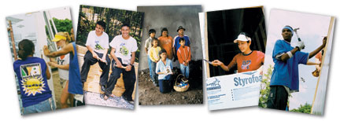

The Summer Youth Blitz is a unique service experience for a diverse group of youth,
ages 16 to 18, from high schools and youth organizations around the United States.
During this program, 15 to 20 youth participants and adult leaders
"blitz build" an entire Habitat house in two weeks.
The house build, an unfamiliar activity for most, provides a common,
nonthreatening ground for building relationships and teams.
In the evenings, the youth participate in activities like team-building games,
leadership development, local cultural events or community dinners.
This program is sponsored by national grant donations and coordinated by the Campus Chapters
and Youth Programs department of Habitat for Humanity International. For the past several years,
funding has allowed for three blitz builds per summer--two in the United States and one outside
the country. The builds take place during the months of June, July and August.
If you're interested in participating, and are between the ages of 16 and 18 years old,
you must submit an application, which is available during January and February.
For more information, contact us at (800) 422- 4828, ext. 2220.
© 2012 Habitat for Humanity International